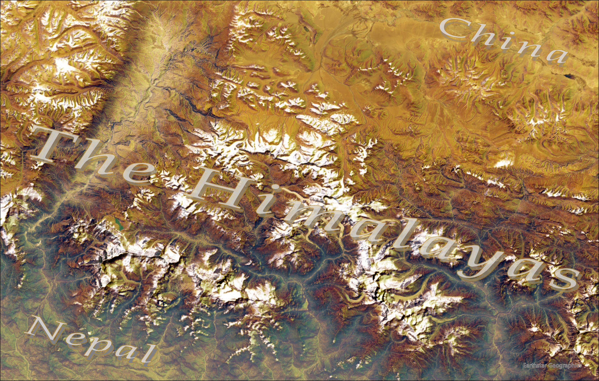

ArcGIS Pro • Affinity
Cartographic Terrain & Relief
Elevation-driven terrain styling and cartographic layout focused on visual hierarchy and legibility.
View Full Image →I am an undergraduate double major in Intelligence Analysis and Geography (Applied GIS Concentration) at James Madison University (expected graduation May 2027), working on NGA Tearline geospatial intelligence research and cartographic/spatial analysis across ArcGIS Pro, Affinity, Python, and SQL.
Explore selected cartographic and spatial analysis projects below, view my current resume, or reach out directly at brett.stone.008@gmail.com.

Elevation-driven terrain styling and cartographic layout focused on visual hierarchy and legibility.
View Full Image →Spatial analysis examining aviation incident patterns alongside surface radar and airspace coverage.
Open PDF Map →Upload an image, PDF, or ArcGIS StoryMap link for your Arctic maritime, migration, or capstone work.
Inspect Sample →Includes education at James Madison University, NGA Tearline research, VADEQ GIS internship work, and technical skills in GIS, remote sensing, structured analysis, Python, and SQL.